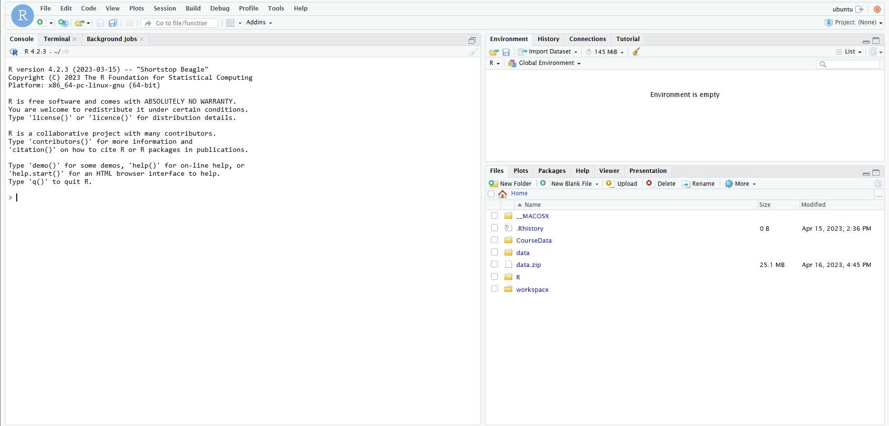
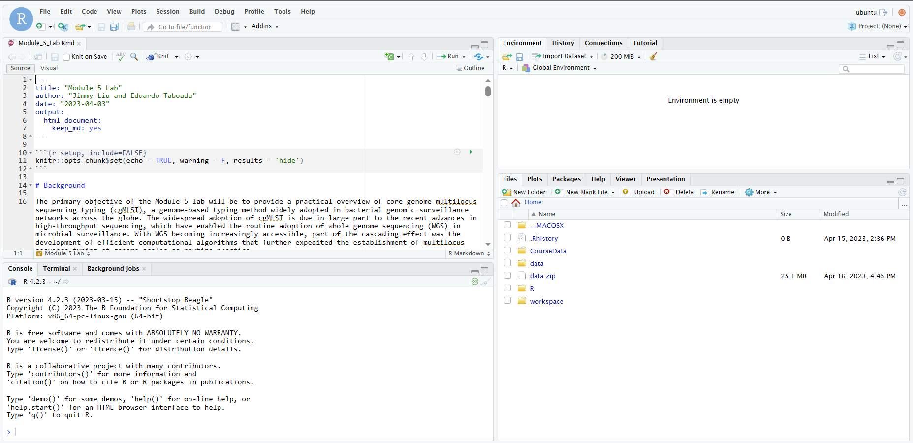
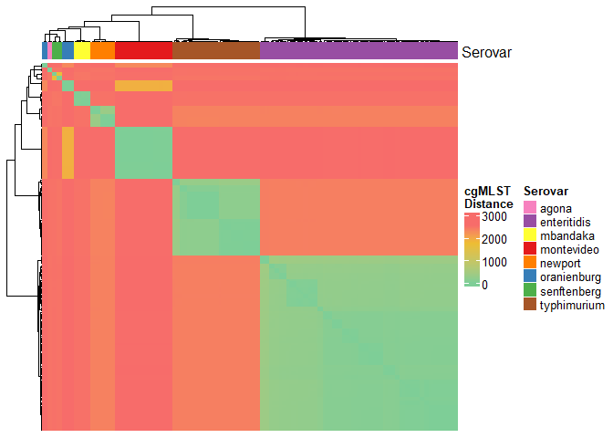
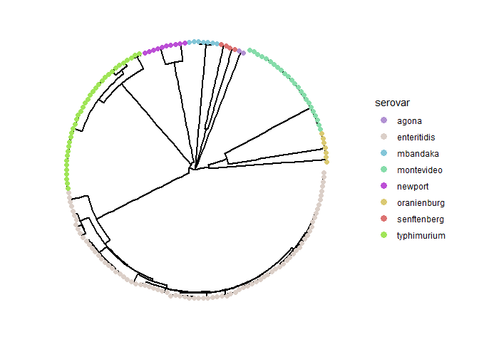
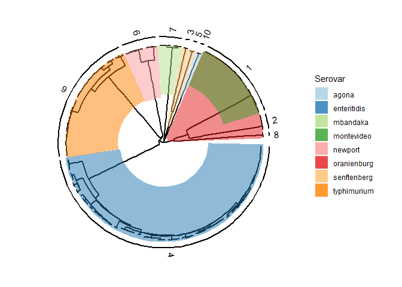
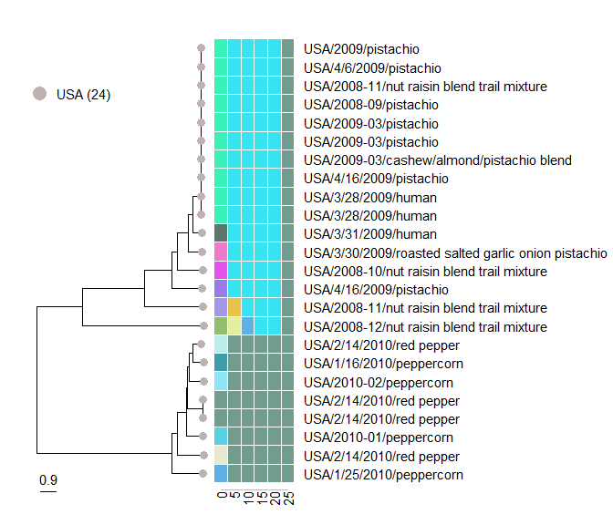
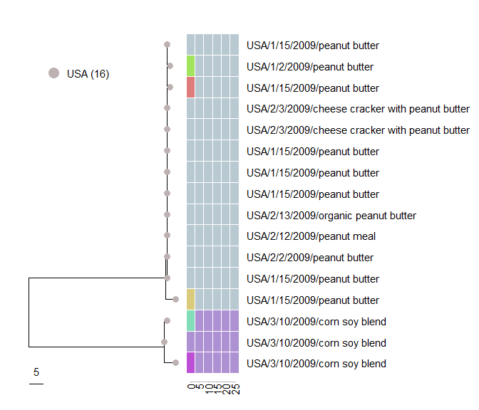

Module 5: Bacterial Pathogen Genomic Analysis
Lab
The lab assignment is written in Rmarkdown (.Rmd) which means that the lab is intended to be run in RStudio IDE.
Setup
Before connecting to your RStudio instance, please perform the following steps:
- Log into your remote instance using ssh
# replace xx with your student number
ssh -i CBW.pem xx.uhn-hpc.ca- Copy the lab materials from
CourseDatatoworkspace/
cp -r ~/CourseData/IDE_data/module5/ ~/workspace/- You should now find a directory called
module5under~/workspace/. Uselsto list the file content in~/workspace/module5to verify that you have successfully copied all of the required files.
ls ~/workspace/module5Expected output:
#### Launching RStudio
Open a browser tab and navigate to
http://xx.uhn-hpc.ca:8080(Remember to replacexxwith your student number!)Log in using the following credentials:
- Username: ubuntu
- Password will be provided in class
If logged in successfully, you should see the following graphical interface in your browser:

- Load up
Module_5_Lab.Rmdby clicking [File] -> [Open File] -> [Select the .Rmd file inmodule5directory]
If you have successfully opened the .Rmd file, you will see the following screen:

Background
The primary objective of the Module 5 lab will be to provide a practical overview of core genome multilocus sequencing typing (cgMLST), a genome-based typing method widely adopted in bacterial genomic surveillance networks across the globe. The widespread adoption of cgMLST is due in large part to the recent advances in high-throughput sequencing, which have enabled the routine adoption of whole genome sequencing (WGS) in microbial surveillance. With WGS becoming increasingly accessible, part of the cascading effect was the development of efficient computational algorithms that further expedited the establishment of multilocus sequence typing at genome scales as routine practice.
The implementation of cgMLST by the PulseNet International network for foodborne outbreak surveillance has made it possible for WGS data to be used as evidence in public health investigations. Here, you will work with cgMLST data to conduct a retrospective analysis on a dataset that includes a number of possible Salmonella enterica outbreaks. Salmonella, which is primarily transmitted to humans through the consumption of contaminated foods, is one of the leading enteric pathogens in Canada and across the globe and was the first pathogen for which comprehensive genomic surveillance was implemented in Canada.
The outbreak dataset consists of WGS data from isolates recovered from samples collected from a diverse range of geographical regions, environments, and timelines that can be dated back to the early 2000s. Curating this outbreak dataset involved querying a global bacterial genomic surveillance database (GenomeTrakr) and PubMed queries to identify peer-reviewed publications that reported retrospective genomic analysis of Salmonella outbreaks. In this exercise, you will use a custom workflow written in the R language for statistical computing that includes modules to perform various steps in genomic epidemiologic analysis using cgMLST data. Your challenge will be to leverage the tools and data at your disposal to establish high quality cgMLST profiles that can be used to infer genetic relatedness and to explore patterns in the data in order to synthesize possible interpretations based on all available genomic and epidemiological data.
To start, you are provided with pre-computed cgMLST allele calls generated by chewBBACA (Silva et al. 2018, using a Salmonella core genome scheme based on 3,000 loci downloaded from here. Minor filtering has been performed to remove loci with zero informative alleles across the entire dataset. The following code template was used to call chewBBACA on a set of Salmonella genomes consolidated in a single directory called /path/to/my_genomes:
chewBBACA.py AlleleCall -i /path/to/my_genomes/ -g /path/to/cgMLST_scheme/ -o /path/to/resultsLearning Objectives
- Understanding the significance of metrics used for MLST-based quality control
- Explaining the difference between core, accessory and pan-genome loci and their use in MLST analysis
- Building dendrograms from MLST data
- Familiarisation with the ggtree R library for tree visualization
- Exploring the clonality of bacterial populations in the context of bacterial foodborne outbreaks
- Leveraging epidemiological data by linking it to MLST-based dendrograms to explain molecular differences and infer possible outbreak scenarios
Getting Started
Let’s begin by loading all R packages and helper scripts required to run all the code in this lab.
Every time you begin a new R session, you must reload all the packages and scripts!
suppressPackageStartupMessages(library(tidyverse))
suppressPackageStartupMessages(library(data.table))
suppressPackageStartupMessages(library(treedataverse))
suppressPackageStartupMessages(library(plotly))
suppressPackageStartupMessages(library(ggnewscale))
suppressPackageStartupMessages(library(ComplexHeatmap))
suppressPackageStartupMessages(library(circlize))
suppressPackageStartupMessages(library(randomcoloR))
suppressPackageStartupMessages(library(RColorBrewer))
suppressPackageStartupMessages(library(phangorn))
suppressPackageStartupMessages(library(knitr))
source("src/mlst_helper.R")
source("src/ggtree_helper.R")
source("src/cluster_helper.R")Next, read the cgMLST data and metadata into memory using fread() from the data.table package.
# data paths
metadata_path <- "data/senterica_metadata_final.tsv"
cgmlst_path <- "data/senterica_cgMLST_full.tsv"
# read file
meta <- fread(metadata_path, sep = "\t", colClasses = "character")
cgmlst <- fread(cgmlst_path, sep = "\t")cgMLST QC
Before proceeding any further, you will first evaluate cgMLST data quality. A number of quality criteria will be defined to determine whether the properties of the allele profiles meet quality standards. Incomplete genome assembly and reference bias during MLST scheme construction can introduce significant levels of missing information in MLST data in the form of unassigned alleles at various loci. Hence, care must be taken to avoid comparisons that include loci and genomes with excessive numbers of unassigned alleles that could reduce the precision of genetic similarity calculations to be used for generating dendrograms for inferring relationships between the various genomes in the dataset.
Below, you will conduct a series of steps to compute the frequency of unassigned alleles across each locus (i.e. columns) and genome (i.e. rows), which will inform the identification of poor quality loci/genomes that may need to be flagged for removal from downstream analyses.
Editable parts of the code have been highlighted in the code chunks. You are highly encouraged to adjust them to observe how different parameters affect the outcome.
Locus Quality
# use compute_lc helper function to compute
# allele assignment rate (completeness)
# across all loci
loci_completeness <- compute_lc(cgmlst)
# write to file
write.table(loci_completeness, "cgmlst_loci_quality.stats.tsv",
quote = F, row.names = F, sep = "\t")
# print summary statistics for locus completeness
summary(loci_completeness)## locus valid_alleles missing_alleles completeness
## Length:2952 Min. : 4.0 Min. : 0.000 Min. : 2.198
## Class :character 1st Qu.:181.0 1st Qu.: 0.000 1st Qu.: 99.451
## Mode :character Median :182.0 Median : 0.000 Median :100.000
## Mean :180.1 Mean : 1.885 Mean : 98.964
## 3rd Qu.:182.0 3rd Qu.: 1.000 3rd Qu.:100.000
## Max. :182.0 Max. :178.000 Max. :100.000##### EDITABLE VARIABLE #####
lqual_threshold <- 2
#############################
# identify low qual loci
lqual_loci <- loci_completeness %>%
filter(missing_alleles > lqual_threshold) %>%
pull(locus)
# remove low qual loci from input cgMLST data
cgmlst_lc <- cgmlst %>% select(-all_of(lqual_loci))
# write to file
write.table(cgmlst_lc, "cgmlst_lqual_loci_rm.tsv",
quote = F, row.names = F, sep = "\t")
# print filtering results
message(paste("Number of loci before filter:", ncol(cgmlst)-1))
message(paste("Number of loci after filter:", ncol(cgmlst_lc)-1))
message(paste("Number of loci removed:", ncol(cgmlst)-ncol(cgmlst_lc)))
message(paste0("Loci with ", lqual_threshold, " or less missing alleles were retained"))Defining Core Genes
##### EDITABLE VARIABLE #####
core_threshold <- 1
genome_qual <- 27
#############################
# compute core loci
core_loci <- calculate_core(
mlst = cgmlst_lc,
core_threshold = core_threshold,
genome_qual = genome_qual
)Genome Quality
# compute genome completeness
# given quality filtered scheme
genome_completeness <- cgmlst_lc %>%
select(1, all_of(core_loci)) %>%
compute_gc()
# write to file
write.table(genome_completeness, "cgmlst_genome_qual.stats.tsv",
quote = F, row.names = F, sep = "\t")
# print data summary of genome completeness
summary(genome_completeness)## ID valid_alleles missing_alleles completeness
## Length:182 Min. :2581 Min. : 0.000 Min. : 96.74
## Class :character 1st Qu.:2667 1st Qu.: 0.000 1st Qu.: 99.96
## Mode :character Median :2668 Median : 0.000 Median :100.00
## Mean :2664 Mean : 4.275 Mean : 99.84
## 3rd Qu.:2668 3rd Qu.: 1.000 3rd Qu.:100.00
## Max. :2668 Max. :87.000 Max. :100.00##### EDITABLE VARIABLE #####
lqual_g_threshold <- 26
#############################
# identify low qual genomes
lqual_genomes <- genome_completeness %>%
filter(missing_alleles > lqual_g_threshold) %>%
pull(ID)
# remove low qual genomes from quality filtered cgmlst
cgmlst_final <- cgmlst_lc %>%
filter(!(`#Name` %in% lqual_genomes)) %>%
select(1, all_of(core_loci))
# remove low qual genomes from metadata
metadata <- meta %>% filter(!(ID %in% lqual_genomes))
# write to file
write.table(cgmlst_final, "cgmlst_final.tsv",
quote = F, row.names = F, sep = "\t")
# print filtering results
message(paste("Number of genomes before filter:", nrow(cgmlst_lc)))
message(paste("Number of genomes after filter:", nrow(cgmlst_final)))
message(paste("Number of genomes removed:", nrow(cgmlst_lc)-nrow(cgmlst_final)))
message(paste0("Genomes with ", lqual_g_threshold, " or less missing alleles were retained"))Hamming Distance
Distance-based and character-based methods can both be used to construct dendrograms from cgMLST data. However, the scope of this lab will only cover distance-based dendrograms, as character-based methods are covered extensively in other modules. In phylogenetic analysis, distance-based approaches are rather flexible in the sense that they can be constructed from any measure that quantifies genetic similarity, including distances computed by alignment-free (e.g. Mash) or alignment-based (e.g. BLAST) similarity search algorithms. Below, you are introduced to a metric called “Hamming distance”, which is based on computing the number of differences between a pair of character vectors.
Given two character vectors of equal lengths, hamming distance is the total number of positions in which the two vectors are different:
Profile A: [ 0 , 2 , 0 , 5 , 5 , 0 , 0 , 0 , 0 ]
Profile B: [ 0 , 1 , 0 , 4 , 3 , 0 , 0 , 0 , 0 ]
A != B: [ 0 , 1 , 0 , 1 , 1 , 0 , 0 , 0 , 0 ]
Hamming distance = sum( A != B ) = 3
dist_mat <- cgmlst_final %>%
column_to_rownames("#Name") %>%
t() %>%
hamming()
# print matrix dimension
# the dimension should be symmetric!
dim(dist_mat)## [1] 172 172In the context of two cgMLST profiles, hamming distance can be calculated based on the number of allele differences across all loci. Hamming distances will be computed in an all vs all fashion to generate a pairwise distance matrix that will serve as the input for distance-based tree-building algorithms such as UPGMA and Neighbour-joining. We will visualize the clustering patterns in the distance matrix using the ComplexHeatmap package. We will also overlay serovar information to examine inter- and intra-serovar distances.
# create column annotations for heatmap
# to display serovar information
heatmap_annot <- metadata$serovar
names(heatmap_annot) <- metadata$ID
heatmap_annot <- heatmap_annot[order(factor(names(heatmap_annot),
levels = rownames(dist_mat)))]
# create heatmap
dist_mat %>%
Heatmap(
name = "cgMLST\nDistance",
show_row_names = F, # do not display row labels
show_column_names = F, # do not display column labels
# use custom color gradient
col = colorRamp2(
c(min(dist_mat), mean(dist_mat), max(dist_mat)),
c("#7ece97", "#eebd32", "#f76c6a")
),
# add column annotation to show serovar info
top_annotation = HeatmapAnnotation(
Serovar = heatmap_annot,
col = list(
"Serovar" = structure(brewer.pal(length(unique(heatmap_annot)), "Set1"),
names = unique(heatmap_annot))
)
)
)
Dendrogram Construction
Here you will construct a neighbour-joining (NJ) tree using the nj() function from the ape package. Alternatively, a UPGMA tree can be constructed by simply replacing method = 'nj' with method = 'upgma' in the code chunk below.
To visualize the resulting dendrogram, you will interact with the R package ggtree, which offers an extensive suite of functions to manipulate, visualize, and annotate tree-like data structures. In this section, you will be introduced to the different visual capabilities of the ggtree package, and progressively update the same tree with several layers of visual annotations based on available metadata.
A Simple Tree Vis
To start, run the following code chunk to plot a circular tree of the entire dataset with the tree tips colored by serovar information.
You can assign a different metadata field to the color_var variable to update the mapping of the color aesthetics in the tree. For example setting color_var = "Country" will color the tree tips by the country of origin
##### EDITABLE VARIABLE #####
color_var <- "serovar"
#############################
# set random seed
set.seed(123)
# determine category count
# in the color aes variable
n_colors <- length(unique(pull(metadata, !!sym(color_var))))
# construct a core genome tree
# using nj algorithm
cg_tree <- distance_tree(
matrix = dist_mat,
method = "nj"
)
# plot core genome tree and
# colouring the tree tips
# by color_var
cg_tree_p <- cg_tree %>%
ggtree(layout = "circular",
size = 0.75) %<+% metadata +
geom_tippoint(aes(color = !!sym(color_var)),
size = 2) +
guides(color = guide_legend(override.aes = list(size = 3) ) ) +
scale_color_manual(values = distinctColorPalette(n_colors))
# print tree plot object
cg_tree_p
Clustering by Distance
Identifying clusters of genomes sharing highly similar cgMLST profiles through the application of distance thresholds is a common practice in genomic surveillance and epidemiological investigations. Detecting novel clusters, comprising pathogen isolates from human clinical cases, can signal the emergence of an outbreak requiring a public health response and can provide important epidemiological insights on outbreak progression. Similarly, the co-clustering of outbreak isolates with isolates from food/environmental sources can help link the outbreak to possible sources/reservoirs of the pathogen in order to inform prevention and control measures.
In this section, you will generate genomic clusters from the dataset by applying several distance cutoffs. You will then place clusters within the dendrogram and analyze cluster memberships to spot possible outbreaks in the dataset.
# define clustering distance cutoffs
dist_cutoff <- c(0, seq(5, 100, 5), seq(200, 1000, 100))
# perform complete linkage clustering
hclust_res <- map(dist_cutoff, function(x) {
dist_mat %>%
as.dist() %>%
hclust(method = "complete") %>%
cutree(h = x) %>%
as.factor()
})
names(hclust_res) <- paste0("clust_", dist_cutoff)
# print clustering results table
(
clusters <- data.frame(hclust_res) %>%
rownames_to_column("ID")
)Let’s now superimpose the clustering information on the previous tree to examine whether the above code chunk has generated sensible cluster assignments. Run the code chunk below to insert text labels that span across tree tips assigned to the same clusters at a specified threshold.
You can update the target_threshold variable to examine how cluster membership changes in response to clustering distance cutoffs.
### EDITABLE VARIABLE ###
target_threshold <- 500
#########################
# variable to subset clusters
target_variable <- paste0("clust_", target_threshold)
# create cluster group list object
cluster_grp <- clusters %>%
select(ID, target_variable) %>%
group_by(!!sym(target_variable)) %>%
{setNames(group_split(.), group_keys(.)[[1]])} %>%
map(~pull(., ID))
# sequester singleton clusters
cluster_grp <- cluster_grp[which(map_dbl(cluster_grp, ~length(.)) > 1)]
# create serovar group list object
serovar_grp <- metadata %>%
select(ID, serovar) %>%
split(f = as.factor(.$serovar)) %>%
map(~pull(., ID))
# add cluster memberships and serovar information
# to tree object
cg_tree <- groupOTU(cg_tree, cluster_grp, 'Clusters')
cg_tree <- groupOTU(cg_tree, serovar_grp, 'Serovars')
# plot core genome tree where
# colored blocks = clusters
# text annotations = serovars
cg_tree %>%
ggtree(layout='circular', # tree shape
size = 1 # branch width
) +
# add colored blocks to display serovars
geom_hilight(
mapping = aes(
node = node,
fill = Serovars,
subset = node %in% map_dbl(
serovar_grp,
~getMRCA(cg_tree, .)
)
)
) +
# add text annotations to display clusters
geom_cladelab(
mapping = aes(
node = node,
label = Clusters,
subset = node %in% map_dbl(
cluster_grp,
~getMRCA(cg_tree, .)
)
),
horizontal=T,
angle = 'auto',
barsize = 0.75,
offset = 50,
offset.text = 50,
align = T
) +
# legend parameters
guides(fill = guide_legend(
nrow = 9,
override.aes = list(alpha = 0.8)
)
) +
labs(fill = "Serovar") +
scale_fill_brewer(palette = "Paired")
Cluster Analysis
In order to analyze the clustering patterns in the core genome tree at greater resolutions, you will work with a number of R functions introduced below. These functions are intended to be used in conjunction to zoom in on specific bacterial populations in the dataset that would empower you to explore the clonality and epidemiology of target strains.
serovar_subtree
The purpose of the function serovar_subtree is to analyze subtrees of specific serovars. The target serovar to examine is defined by the serovar_name variable. Specifying a NULL value to the variable will display the entire tree.
The serovar tree can be annotated with cluster information at a specific threshold in the form of tip-spanning text labels. The cluster membership annotations are defined by the variable, distance_threshold.
# NOTE: there needs to be a comma at the end of each line!
serovar_subtree(
tree = cg_tree,
serovar_name = NULL, # which serovar cluster to visualize?
distance_threshold = 10, # the dist threshold used for cluster definition?
color_by = "serovar", # which metadata variable to color tree tips by?
color.tiplab = F, # whether to color tip labels
tip.size = 4, # size of tree tip point
label_vars = c("geo_loc", "iso_date", "iso_source"), # metadata vars only
label.offset = 80, # distance between labels and tree tips
label.size = 5, # tree tip label text size
legend.x = 0.23, # legend position on x axis
legend.y = 0.9, # legend position on y axis
legend.size = 6, # legend text size
legend.ncat.per.col = 8, # number of categories to show per column in legend
hide.legend = F, # whether to hide colour legend
plot.xlim = 2300, # plot area width
annot.offset = 3, # distance between heatmap and tree tips
annot.textsize = 5, # heatmap x axis text label size
annot.barsize = 0.75, # annotation bar width
show.title = T # whether to display distance threshold
)# export tree to pdf format
ggsave("serovar_subtree.pdf", height = 30, width = 16)cluster_subtree
The purpose of the function cluster_subtree is to analyze subtrees of specific clusters defined at a given distance threshold. A cluster is defined by its ID and the distance threshold used for assignment, which are defined by the variables cluster_name and distance_threshold, respectively. Note that you will need to utilize the serovar_subtree to identify the IDs of clusters of interest.
# NOTE: there needs to be a comma at the end of each line!
cluster_subtree(
tree = cg_tree,
clusters = clusters,
distance_threshold = 25, # the dist threshold used for cluster definition?
cluster_name = "1", # cluster ID to visualize?
color_by = "country", # which metadata variable to color tree tips by?
color.tiplab = F, # whether to color tip labels
tip.size = 3, # size of tree tip point
legend.x = 0.1, # legend position on x axis
legend.y = 0.85, # legend position on y axis
legend.size = 5, # legend text size
legend.ncat.per.col = 8, # number of categories to show per column in legend
hide.legend = F, # whether to hide colour legend
plot.xlim = 30, # plot area width
label_vars = c("country", "iso_date", "iso_source"), # metadata vars only
label.offset = 5.5, # distance between labels and tree tips
label.size = 4, # tree tip label text size
annot.offset = 0.1, # distance between heatmap and tree tips
annot.width = 0.4, # heatmap width
annot.textsize = 4, # heatmap x axis text label size
annot.nthreshold = 6 # number of clustering thresholds to display
)
cluster_summary
The purpose of the function cluster_summary is to compare the distribution of the categorical data in the metadata between clusters defined at a distance threshold. For example, these comparisons can provide a global summary of the putative sources of origin and geographical spread of each genomic cluster.
# NOTE: there needs to be a comma at the end of each line!
cluster_summary(
distance_threshold = 10, # the dist threshold used for cluster definition?
serovar_name = NULL, # which serovar to include?
vars = c("geo_loc","iso_source", "iso_date_ym"), # metadata vars only
panel.ncol = 1, # number of columns to arrange the panels in
rm.low.freq.clust = T, # whether to remove low frequency (N < 4) clusters
interactive = T # whether to generate interactive plots
)Investigating Local Core Genes
# identify a local core genome scheme
# for a target cluster and build tree
local_tree <- local_cg_tree(
core_mlst = cgmlst_final,
full_mlst = cgmlst_lc,
distance_threshold = 100, # the dist threshold used for cluster definition?
cluster_name = "10", # cluster ID to analyze?
core_threshold = 1, # minimum number of missing alleles allowed
method = "nj" # tree method: nj or upgma
)
# perform complete linkage clustering
hclust_res_local <- map(dist_cutoff, function(x) {
cophenetic.phylo(local_tree) %>%
as.dist() %>%
hclust(method = "complete") %>%
cutree(h = x) %>%
as.factor()
})
names(hclust_res_local) <- paste0("clust_", dist_cutoff)
# create clusters data frame
clusters_local <- data.frame(hclust_res_local) %>%
rownames_to_column("ID")plot_subtree(
tree = local_tree,
clusters = clusters_local,
color_by = "country", # which metadata variable to color tree tips by?
color.tiplab = F, # whether to color tip labels
tip.size = 3, # size of tree tip point
legend.x = 0.15, # legend position on x axis
legend.y = 0.85, # legend position on y axis
legend.size = 5, # legend text size
legend.ncat.per.col = 8, # number of categories to show per column in legend
hide.legend = F, # whether to hide colour legend
plot.xlim = 150, # plot area width
label_vars = c("country", "iso_date", "iso_source"), # metadata vars only
label.offset = 25, # distance between labels and tree tips
label.size = 4, # tree tip label text size
annot.offset = 0.1, # distance between heatmap and tree tips
annot.width = 0.3, # heatmap width
annot.textsize = 4, # heatmap x axis text label size
annot.nthreshold = 6 # number of clustering thresholds to display
)
Group Exercise
Review the cgMLST profiles before and after the removal of low quality genomes, and identify two samples that exceed >1% unassigned alleles (i.e. with more than 26 unassigned alleles).
Review the circular tree and identify which serovar(s) is/are not monophyletic (i.e. serovars that are distributed in multiple areas of the tree).
Use one of the following functions or in combination: serovar_subtree(), cluster_subtree(), cluster_summary() to analyse one particular serovar and identify three clusters that likely correspond to different outbreaks.
Identify genomic clusters that fit the following criteria and consider possible scenarios for interpretation of genomic data and epidemiological metadata:
- A genomic cluster comprising human clinical cases with similar geographical and temporal information
- A genomic cluster in which the human clinical cases are dispersed in geography and/or time
- A genomic cluster in which human clinical isolates cluster with non-human isolates from a particular source type
- A genomic cluster in which human clinical isolates cluster with non-human isolates from multiple source types.
- Genomes from different genomic clusters identified within a single putative outbreak that can be linked to a common source
Is it important to analyze clusters at different distance cutoffs? Why?
What functional products could be encoded by the accessory loci in the data?
Lab Completed!
Congratulations! You have completed Lab 5!